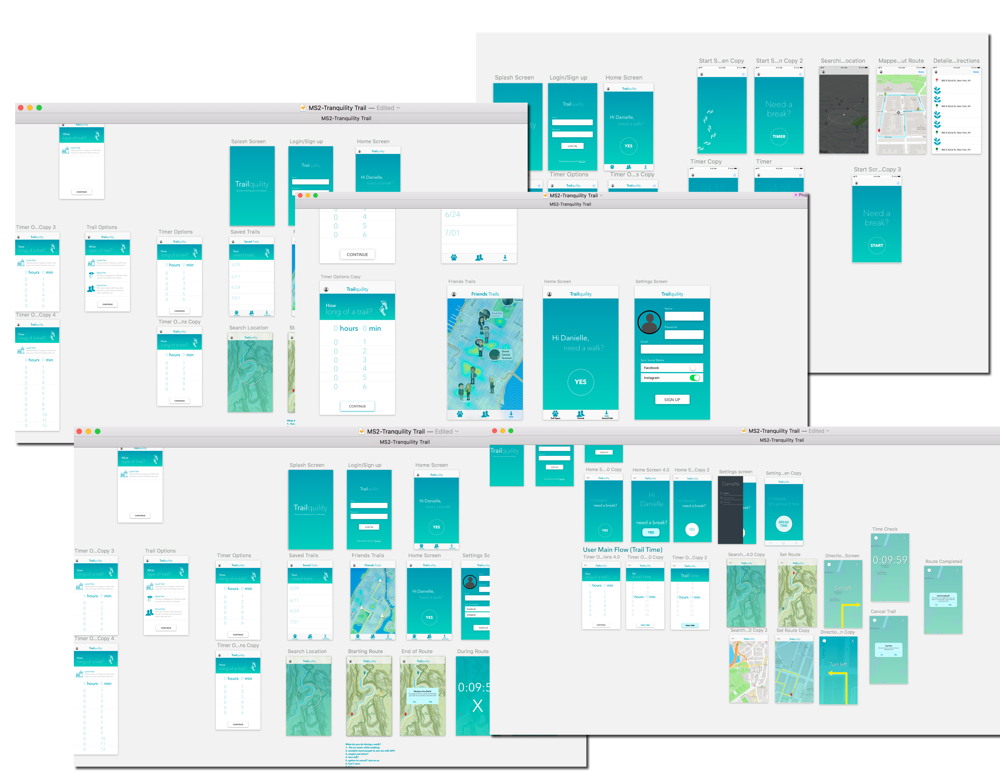
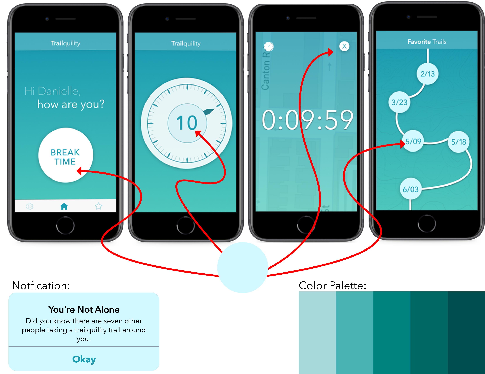
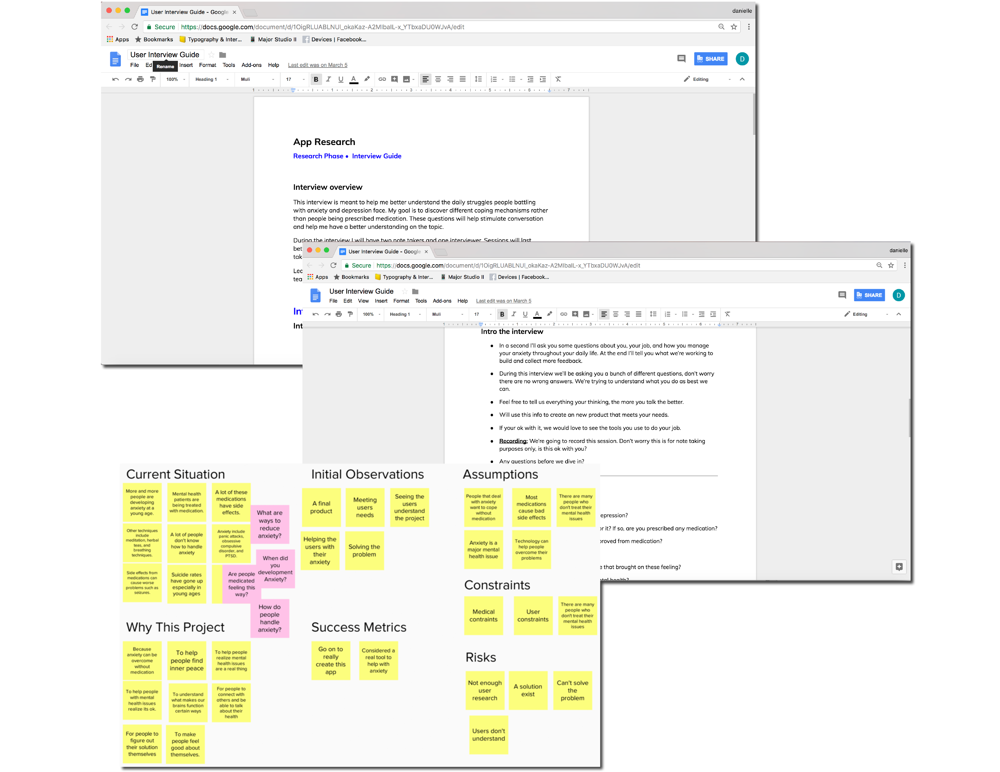
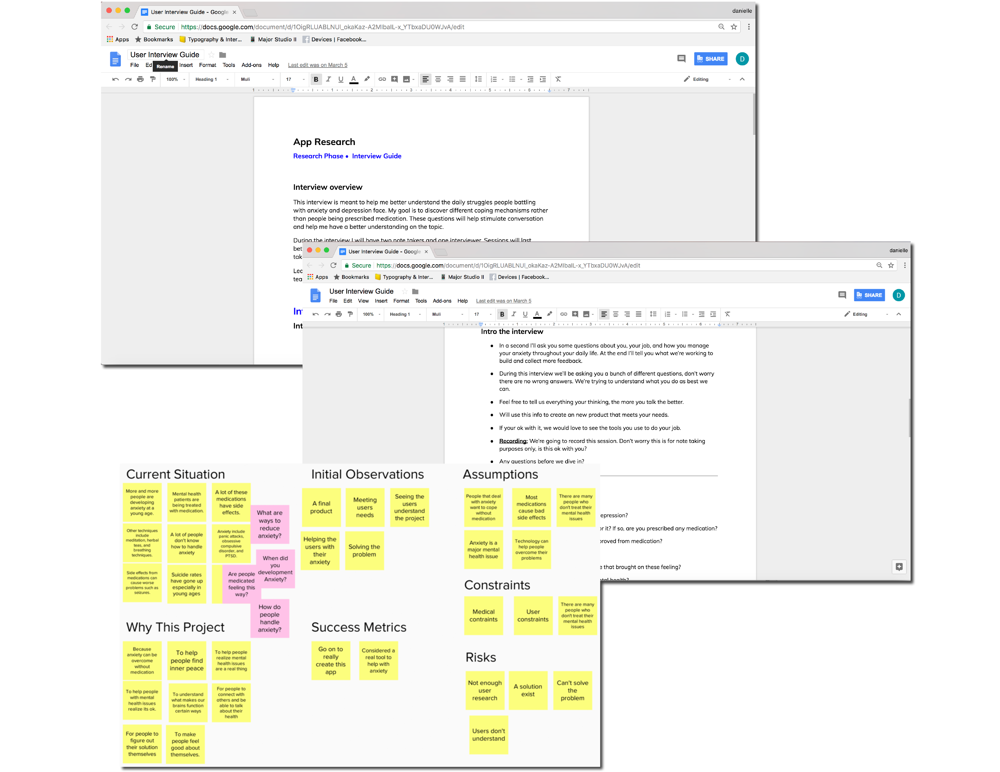

Research Phase
According to the National Alliance of Mental Illness, approximately 18.5% of adults in the U.S experiences mental illness in a given year. Also 18.1% of adults in the U.S experience an anxiety disorder. To find out more about the idea of giving a user a creative outlet to reduce stress, I interviewed a physiatrist, an art therapist, a holistic therapist, and people suffering with anxiety and panic disorder. While interviewing I noticed the question ‘what did you do for yourself today’, came up. I wanted to focus on this concept. What do we do for ourselves? Do we ever step back and take a break? I created a project charter in order to map out my idea and see what assumptions and predictions I had before designing the product.

Prototyping Phase
After synthesizing all my research, I created four paper prototypes consisting of four different solutions to my problem. When using testing each paper prototype, I found the idea of having a trail designed to calm you down was the most popular. I went on to create a system of design in order to map out the users main flow. I decided to take my post-its to sketch and design my first lo-fi prototype. After using testing, I decided to build according to user testing results and went on to design 3 rounds of prototypes. Finally, I decided to simplify my design and concept. User testing was helpful but it made the app’s main goal shift. I took a step back and went back to the basics. I needed to design my app with the heart of the product in mind.

The Final Product
The final product includes four main flows- the process of picking the time for your walk, searching your location for your trail, taking the actual walk, and saving it to your favorites. For branding, I went with teal gradients, faded trail textures, and rounded buttons. I wanted the user to feel immediately at eased when opening the app. For a sense of community, I added a notification that gives the user a friendly reminder they are not alone and the amount of people using the same app in their area. I wanted the user to be able to go on the home screen and be ready to click the pulsing ‘break time’ button whenever they needed to escape immediately. I wanted Trailquility to be easy to use and also give the user a sense of comfort.

 
